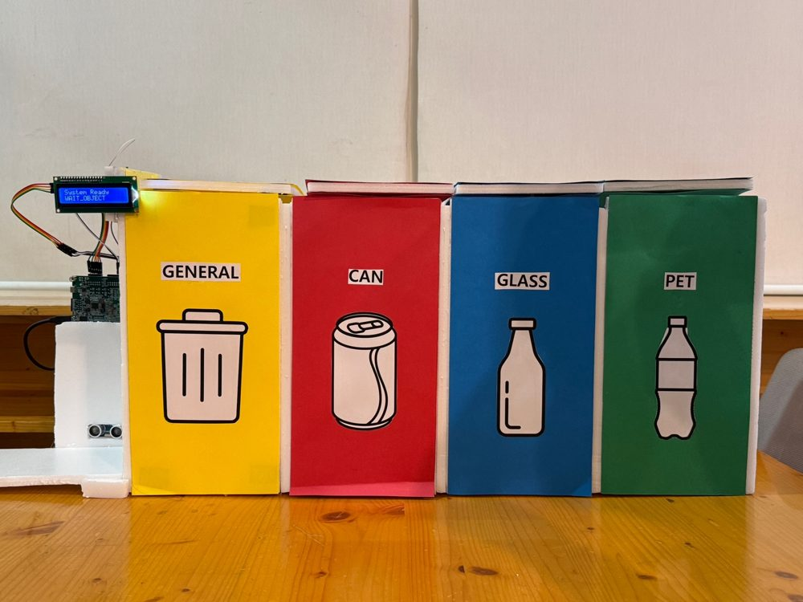
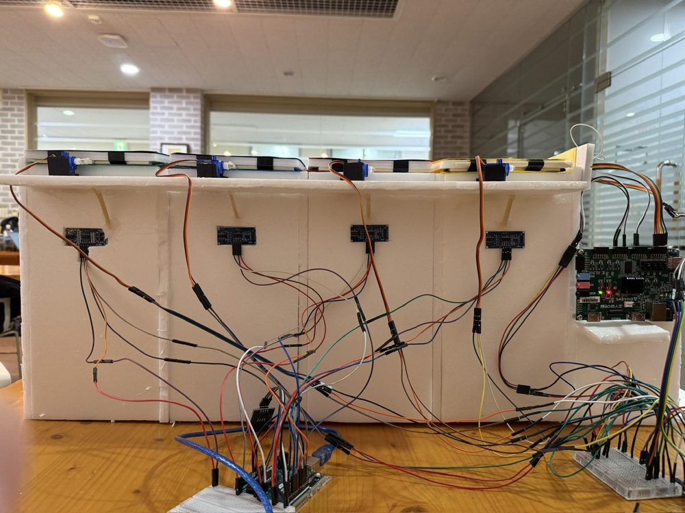
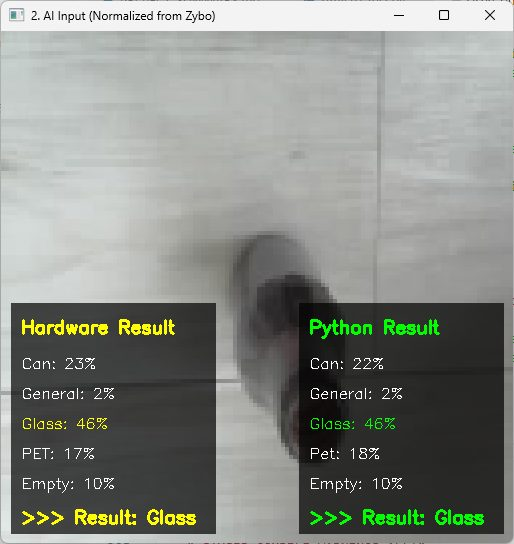
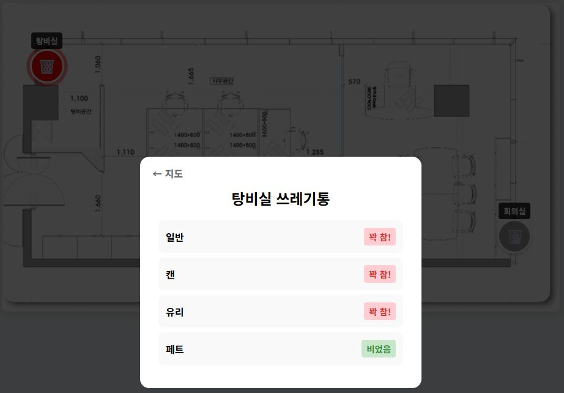

임베디드시스템설계#FreeRTOS#TFLite Micro#MobileNetV2#Flask
저전력 Edge AI 쓰레기 분류 시스템
임베디드시스템설계 Project 3 · 10조
- 문제
- 분리배출을 사람이 직접 판단해야 하고, 쓰레기통이 언제 찼는지 모른 채 정해진 시간에만 수거합니다.
- 접근
- 물체가 올라오면 Zybo Z7-20이 카메라로 찍어 캔, 일반, 유리, 페트를 분류하고 해당 뚜껑을 엽니다. 평소에는 초음파 센서만 켜 두고, 물체가 감지될 때만 AI 태스크를 깨웁니다.
- 결과
- 5종(빈 화면 포함) 분류 정확도 72.3%. 적재 상태는 Wi-Fi로 서버에 보내 웹 대시보드에서 2초마다 갱신합니다.




시스템 구조
핵심 구현
- MobileNetV2(α=0.5, 128×128)를 두 단계로 전이학습: 상위 레이어 학습 후 베이스 상위 40개 레이어 미세조정
- TrashNet, RealWaste, TrashBox 데이터셋을 캔, 일반, 유리, 페트, 빈 화면 5종으로 재구성
- FreeRTOS 태스크 우선순위를 나누고, 바이너리 세마포어 두 개로 카메라와 AI 태스크가 번갈아 돌게 해 이미지 버퍼 덮어쓰기를 막음. UART는 Mutex로 보호하고 송수신은 Queue로 비동기 처리
- Arduino #1은 레지스터 제어와 3상태 FSM. 분류 결과가 오지 않으면 타임아웃으로 대기 상태로 복귀
- Arduino #2는 UART 인터럽트 원형 큐로 Wi-Fi 모듈 응답 유실을 막음
수치
- 분류 정확도
- 72.3% (2단계 학습 후)
- 모델
- 파라미터 876,469개 · 3.34MB
- 추론 환경
- Zynq PS(ARM Cortex-A9), TFLite Micro, 텐서 아레나 4MB
- RTOS
- 태스크 7개, 바이너리 세마포어, Mutex, Queue
링크
- 시연 영상 원본Google Drive